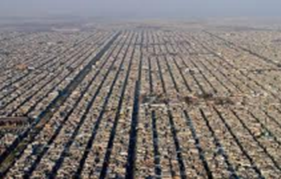
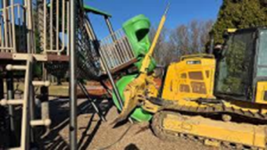

The Trap of Car Dependency
Section 1

The Sprawl and Infrastructure Loop
Car-dependent planning creates a cycle that is difficult to break. By designing cities around the private automobile, we are forced to build wider, longer roads to accommodate traffic. However, these expansions rarely solve congestion; instead, they encourage sprawl, the expansion of residential and commercial areas further away from the city center. As the city spreads out, commutes become longer and more taxing, necessitating even more road expansion. This loop consumes vast amounts of land and resources, ultimately undermining the efficiency that transportation is supposed to provide.
Section 2

The Erostion of Social Infrastructure
In a landscape dominated by cars, third spaces such as public areas like parks, plazas, and sidewalk cafes where community life happens are frequently sacrificed to make room for lanes and parking lots. When residents move exclusively between private homes, private vehicles, and isolated office buildings, the opportunity for spontaneous social interaction vanishes. This creates a state of social isolation, as the infrastructure itself prevents the chance encounters and community building that historically formed the foundation of urban life.
Section 2
Safety as a Private Financial Burden
When street design prioritizes high-speed vehicle flow over pedestrian accessibility, safety ceases to be a public service and becomes an expensive private burden. In car-centric environments, the lack of people walking on sidewalks leaves neighborhoods vulnerable to property crime, as there are no eyes on the street to monitor public space. Residents are forced to invest in private security, such as gated communities, surveillance systems, and high fencing, to achieve the sense of security that, in transit-oriented cities, is naturally provided by a lively, populated streetscape.
Section 2
The Hidden Costs of the Suburban Model
While car-dependent suburban living is often marketed as affordable, it is financially brittle. Families living in these areas are burdened by the necessity of owning multiple vehicles to maintain basic mobility, with a significant percentage of household income consumed by fuel, maintenance, insurance, and rapid vehicle depreciation. Furthermore, this model relies on borrowing against the city’s future ability to maintain its vast, low-density infrastructure. When repair bills for miles of sprawling roads and pipes inevitably arrive, the tax base created by low-density development is often insufficient to cover them, leading to long-term economic instability.